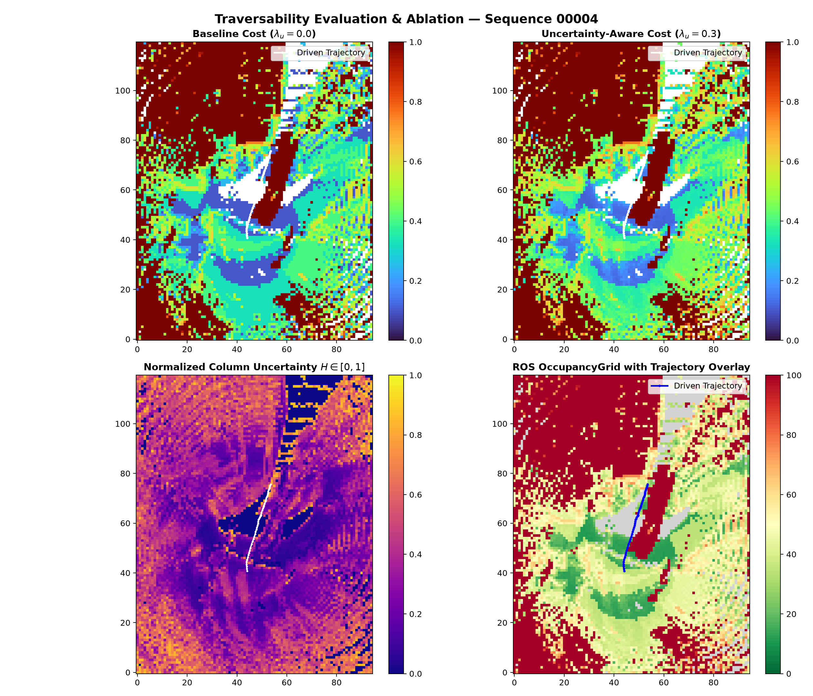
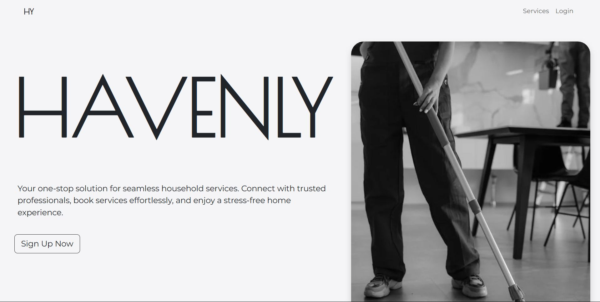

Agrim Srivastava
Software Engineer & AI Systems Researcher
BS in Data Science & Applications at IIT Madras (GPA 9.1 / 10). Architecting multi-agent AI systems, robotics perception pipelines, and deterministic high-reliability web platforms. Passionate about transforming cutting-edge algorithms into dependable production software.
IIT Madras GPA
NutriAgent Tests
Robotics Perception
Public Repositories
Engineering With Precision
I am driven by complex systems engineering — whether coordinating autonomous multi-agent teams with LangGraph, fusing LiDAR and camera streams under ROS 2 for off-road navigation, or crafting deterministic full-stack web platforms.
Currently pursuing my Bachelor of Science in Data Science and Applications at the prestigious Indian Institute of Technology Madras while building open-source projects, contributing to production systems, and teaching Probability & Statistics.
Indian Institute of Technology Madras
BS in Data Science and Applications
Core Coursework: Modern Application Development, Machine Learning, Data Structures & Algorithms, Database Management Systems (DBMS), Linux Systems & Shell Commands.
Academic Service: Appointed Teaching Assistant for undergraduate Probability & Statistics cohort.
Featured Projects
Curated selection from 30+ repositories
NutriAgent
Multi-Agent RAG Nutrition Coach & Vision Pipeline
Production-grade multimodal nutrition tracking system combining LangGraph multi-agent orchestration, Gemini Vision dish decomposition, and pgvector semantic retrieval over 570+ verified ICMR-NIN/USDA food records.

TerraSem
Uncertainty-Aware Semantic Occupancy Mapping
Fuses camera imagery and 3D LiDAR into an intelligent 3D Bayesian Voxel Grid. Calculates epistemic uncertainty so off-road robots safely inflate danger when traversing fog, rain, or deceptive vegetation.
TutorSolve
4-Role Assignment Marketplace & Real-Time Chat
High-concurrency marketplace with isolated Socket.IO chat rooms, multi-phase order lifecycle (Maker-Checker price approval, Stripe escrow split-payments, 25% preview lock until payment), and KYC verification.
EM Algorithm Visualizer
Expectation-Maximization Mathematical Visualizer
Interactive browser tool to simulate and visualize Gaussian Mixture Models (GMM) and Expectation-Maximization step iterations dynamically on custom 2D data distributions.
Course TA RAG Implementation
Intelligent Forum Question Answering Assistant
End-to-end multimodal RAG system trained on IIT Madras academic discourse. Integrates FastAPI with local Ollama embeddings and Gemini for multimodal question resolution with compressed cosine indexing.

Havenly
Household Services Multirole Management Platform
Multirole household service application (Flask + Vue.js + Pinia) with Redis/Celery background task queuing for heavy operations and granular role-based authentication.
Interested in more? Explore my other open-source tools, kernel investigations, and ML experiments on GitHub.
View all 30+ repositories on GitHub →Professional Experience
Software Development Engineer Intern
annam.ai • Remote
- Hardened authentication and RBAC flows, eliminating critical security vulnerabilities in the production system.
- Engineered a real-time question generation pipeline from live transcripts, enabling dynamic context-aware student interaction.
- Architected and shipped production dashboards in React (Vite, Zustand, React Query, TanStack Router), accelerating instructor workflows.
- Contributed across the full backend stack (Node.js, Express, MongoDB, Firebase Admin), delivering production features via disciplined Git workflows.
Teaching Assistant — Probability & Statistics
Indian Institute of Technology Madras • Chennai, India
- Mentored undergraduate cohorts through weekly problem-solving labs, distilling complex probability and statistics concepts into approachable frameworks.
- Triaged and resolved hundreds of student queries on Discourse at scale, measurably boosting conceptual clarity across the cohort.
- Graded assignments and delivered structured, actionable feedback that guided student improvement.
Technical Arsenal
AI & ML Systems
- • Multi-Agent (LangGraph)
- • Multimodal RAG Pipelines
- • Gemini Vision & LLM APIs
- • ROS 2 Robotics (Humble)
- • 3D Bayesian Occupancy
- • Vector Search (MiniLM, pgvector)
Backend & Core
- • FastAPI & Flask
- • Node.js & Express
- • WebSockets / Socket.IO
- • Python & JavaScript
- • Redis & Celery Workers
- • AST Security Guardrails
Frontend & UI
- • React (Vite, Zustand)
- • TanStack Router & Query
- • Vue.js & Pinia
- • Tailwind CSS
- • HTML5 Canvas / Modern Web
- • Responsive UX Design
Data & DevOps
- • PostgreSQL & Supabase
- • MongoDB Atlas & SQLite
- • Docker & Containerization
- • Git & GitHub Actions CI
- • Linux / Bash Scripting
- • Firebase Admin & Stripe
Let's Build Something Exceptional
Whether you have an ambitious software project, an AI research collaboration, or an engineering role, my inbox is always open.